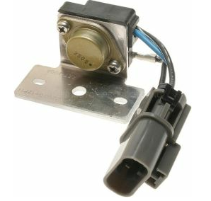
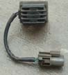

-
So this one is pretty simple. I'm not even going to post pics or wiring diagrams because the Z31 wiring is the same across all years in this modification as far as I'm aware. michaelp said he would take pictures next time he does the upgrade to a customer's car. So I didn't bother taking pics. Thanks to michaelp for some help in sourcing diagrams because I was lazyfaced.
This guide pertains to the following item, it has a number of names:
⢠Power Transistor Unit
⢠Ignition Control Module
⢠Ignitor Chip
⢠Ignition Transistor
It is the transistor that charges/discharges the Ignition Coil.
It can be found on a number of Distributor equipped Nissans
⢠Altima
⢠Sentra
⢠Pathfinder
⢠Maxima
⢠many others, I'm sure.
The one you will source looks like this:
(PRW-2, but there is also a similar looking PRW-1A)
On the Z31 harness located on your drive strut tower behind the headlight (where the main ignition components are), you will find your current PTU. It probably looks like this:

The issue with the newer PRW-2 is that there are two wires that have been flipped, or two contacts that need to be swapped on the Z31 harness.
The procedure is simple. All you need is one of these:
THE ONLY WIRES YOU ARE SWITCHING ARE THE BLACK and the GREEN/WHITE wires.
THE COMMON WIRE BETWEEN PRW-2 EQUIPPED CARS and Z31's IS THE BLUE WIRE. LEAVE THAT WHERE IT IS.
You must remove the black housing clip on the back of the z31 harness grey connector to expose the seals on the back of the wires. All you need to do back here is to be able to see the seals. You do not interact with the seals or poke them at all. You need to remove this black housing clip to be able to pull the wires out. That's all on this side.
Now insert the safety pin into the small rectangular hole just above the head of each of the contact pins from the INSIDE of the connector. You simply lay the pin flat on the top of the connector contact, and slide it in until it stops. Do not force it in. It will slide off. You simple slide the safety pin in until it stops, and gently pry downwards so the retainer inside the connector is moved up and away from the contact pin, while GENTLY tugging on the back of the wire. DO NOT try and use pin removal tools from generic tool kits or whatnot. They are too large, cumbersome, flimsy, thick, or not long enough and bottom out on the connector body.
It takes just a gentle pry and pull.
Once you remove the black wire and the green/white wire, just shove them back into the opposite sockets, and put the black connector back-housing onto the connector again to seal it all up. Drill some holes and weld some 5mm nuts onto your ignition coil bracket or just zip tie it down onto a piece of metal (it needs a heat sink to remain cool) and away you go.
You can refer to the pathfinder and the z31 PTU diagrams to see how the power transistor "collector", "emitter", and "base" terminals are wired up. michaelp might have them, I don't remember where I put them. But if you do decide to look at those diagrams, turn the Pathfinder one upside down to make it less confusing. Nissan changed the orientation of the connector locking tab so it may confuse or cause you to wire it up incorrectly and get no ignition at all.
Things you might experience from doing this mod:
⢠improved ignition response (immediately noticed this)
⢠improved idle
⢠improved timing control/stability (immediately noticed this)
⢠improved coil saturation/discharge
⢠improved improvements.
I know I experienced at least 7 out of the possible 5 I've listed there.
Enjoy, and happy ch00ning. -
Re: Upgrade to PRW-2 Ign. Control Module (Power Transistor U
what years for those models? I am interested in trying this!
I think i found it on rockauto -55.89$+shipping or does it need to be a authentic nissan one?
this it? Its listed under a 92 pathfinder as a "Distributor Transistor Unit" under ignition.
86 NA
87 Turbo
Member of the "zetto sun-ichi" group
Local MN car forum/club anyone welcome..... fivezeroseven.net join! -
Re: Upgrade to PRW-2 Ign. Control Module (Power Transistor U
i would just go to the junkyard and get one. im not sure what years. you're bound to find one in some form of early 90's nissan there for sure. -
Re: Upgrade to PRW-2 Ign. Control Module (Power Transistor U
Are these supposed to be better than the later style z31 PTUs
DD:
86 Black Turbo 5spd
The Fallen:
84 red n/a auto Slicktop, 86 Black 2+2 n/a 5spd
Parting Currently:
86 White Turbo 5spd, 88 n/a 5spd, 84 AE, 88 Shiro #64
Garage Sale -
Re: Upgrade to PRW-2 Ign. Control Module (Power Transistor U
Yea im courious as to what makes this better. It just sees the distribitor and pulses on and off right? SO whats so different with the new one?My Build Thread -
Re: Upgrade to PRW-2 Ign. Control Module (Power Transistor U
The distributor doesnt control the coil, the ECU does…and the ECU grounds/ungrounds the coil with this (PTU). The PRW-2 is a faster responding and more reliable, more modern, transistor.862sik wrote: Yea im courious as to what makes this better. It just sees the distribitor and pulses on and off right? SO whats so different with the new one?
A friend actually told me about how he tried this some time ago, but I'm not sure what his s/n is on here these days.- VG30DET (HE341) 86 300ZX - 1982 280ZX Turbo - Headered NA 1986 300ZX 2+2 - 2000 Xterra - -
Re: Upgrade to PRW-2 Ign. Control Module (Power Transistor U
[quote]michaelp wrote:Ah lol…I was thinking CAS thanks for the correction.Originally posted by 862sik
I see now, faster responding.....I wonder how it actually feels on the road. Ill probably do it soon and then right after, reconnect my blaster coil.My Build Thread -
Re: Upgrade to PRW-2 Ign. Control Module (Power Transistor U
My 86T's "surge" at ~3k was fixed by swapping to this PTU....I had tried multiple different Z31 PTUs, including the 88-89 style, and it still had the surge with them....throttle response is also improved and it pulls harder…- VG30DET (HE341) 86 300ZX - 1982 280ZX Turbo - Headered NA 1986 300ZX 2+2 - 2000 Xterra - -
Re: Upgrade to PRW-2 Ign. Control Module (Power Transistor U
Awesome!michaelp wrote: My 86T's "surge" at ~3k was fixed by swapping to this PTU....I had tried multiple different Z31 PTUs, including the 88-89 style, and it still had the surge with them....throttle response is also improved and it pulls harder…
BTW the '93 pathy has these on a bracket on the plenum iirc -
Re: Upgrade to PRW-2 Ign. Control Module (Power Transistor U
[quote]michaelp wrote:domdogg23 or something. he messaged me long ago but his post was super long and in the end, I don't think it was as simple as "reverse the wires that aren't blue". LOL.Originally posted by 862sik -
Re: Upgrade to PRW-2 Ign. Control Module (Power Transistor U
[quote]Careless wrote: [quote=michaelp]Nope, thats not who I know who did it.Originally posted by 862sik- VG30DET (HE341) 86 300ZX - 1982 280ZX Turbo - Headered NA 1986 300ZX 2+2 - 2000 Xterra - -
Re: Upgrade to PRW-2 Ign. Control Module (Power Transistor U
doesn't matter. :langue -
Re: Upgrade to PRW-2 Ign. Control Module (Power Transistor U
just bought two…one for the 86na and one for the 87t!86 NA
87 Turbo
Member of the "zetto sun-ichi" group
Local MN car forum/club anyone welcome..... fivezeroseven.net join! -
Re: Upgrade to PRW-2 Ign. Control Module (Power Transistor U
Looks similar to the B13 SR20 and GA16 versions.
1986 300ZX Turbo…sold
1990 Skyline GT-R…new money pit
2014 Juke Nismo RS 6-speed…daily -
Re: Upgrade to PRW-2 Ign. Control Module (Power Transistor U
I believe the Standard number is LX748.

Copyright © 2006–. All rights reserved. Privacy Policy